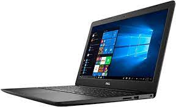
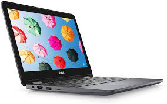
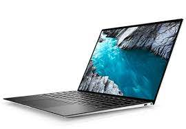
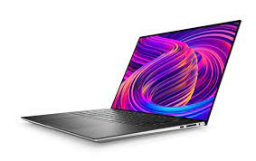
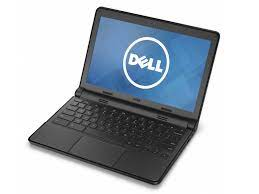

Dell Inspiron 15.6
El modelo Inspiron de 15,6 pulgadas de Dell con funciones de pantalla táctil es muy económico.
Podría ser perfecto para aquellos que buscan portátiles Dell con un presupuesto bajo y un rápido rendimiento.
El portátil funciona con el procesador Intel Core dual-core i5 de 2,2 GHz.
Cuenta con 6 GB de RAM junto con un disco duro de 1 TB.
La pantalla es perfecta para aplicaciones básicas de ordenador portátil con 15,6
pulgadas y una resolución de 1366 X 768 píxeles con pantalla TrueLife retroiluminada por LED.
|

Dell Inspiron 11 3195
Este modelo viene con una pantalla de 11.6 pulgadas y pesa alrededor de 2.82 libras.
Por lo tanto, es una gran opción a tener en cuenta si consideras el factor de la portabilidad.
También está equipado con el procesador Intel Celeron 2,48 GHz N3060.
Además, hay 4 GB de RAM junto con 32 GB de almacenamiento interno eMMC.
Sin embargo, pensamos que la pantalla de 11,6 pulgadas con una resolución de 1366 X 768 píxeles podría ser mejor.
|

Dell XPS 13
Con casi 14 horas de duración de la batería y un cuerpo de aluminio ligero de sólo 2,7 libras,
puedes esperar que este sea uno de los mejores portátiles Dell en el mercado.
También viene con una calidad de construcción duradera e innovadora. Está equipado con
el procesador Intel Core 7th generation i7 de 3,5 GHz y tiene un amplio espacio de almacenamiento
(500GB) con un rápido rendimiento, gracias a su 8 GB de RAM.
En cuanto a la pantalla, el foco principal se dirige a la pantalla InfinityEdge
Touch de 13,3 pulgadas que ofrece QHD+ junto con una resolución de 3200 X 1800 píxeles.
|

Dell XPS 15
Con una asombrosa pantalla InfinityEdge de 15,6 pulgadas con 4K Ultra HD y una
resolución de 3840 X 2160 píxeles, este portátil Dell es otro de los mejores de la serie 2021.
El Dell XPS 15 está equipado con el procesador Intel Core i7 quad-core de 3,5 GHz.
Además, hay 32 GB de RAM con 1 TB SSD. Por lo tanto, nunca tendrás que preocuparte
por la capacidad de almacenamiento de este increíble portátil.
|

Dell Chromebook 11
Si estás buscando los mejores portátiles Dell para estudiantes, este modelo es perfecto para ti.
Este portátil Dell funciona con el procesador Intel Celeron 2,6 GHz N2840.
Hay 4 GB de RAM junto con 16 GB de SSD.
Es perfecto para almacenar una multitud de tareas y proyectos de los estudiantes.
Además, pesa sólo 2.91 libras y, por lo tanto, es lo suficientemente ligero como para ser llevado a cualquier parte.
|

Dell Inspiron 13
Este es el modelo insignia de Dell viene con la función 2 en 1 (puede ser usado como laptop u tableta).
El portátil es compatible con el procesador Intel Core i5 de 3,10 GHz.
Hay 8 GB de RAM junto con 256 GB de SSD. La pantalla es excelente al ser táctil IPS de
13,3 pulgadas con una resolución de 1920 X 1080 píxeles.
Es una de las mejores laptops DELL recomendadas por su bisagra de 360 grados.
Podrás mover el portátil para cualquier tipo de uso. Puedes utilizarlo como portátil,
tableta y adaptarlo a diversos niveles de juegos y visualización.
|